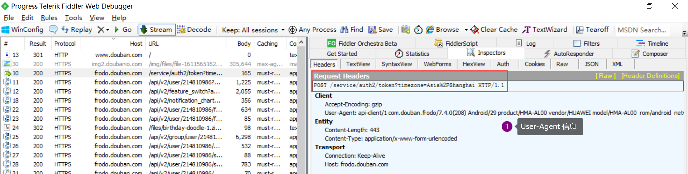
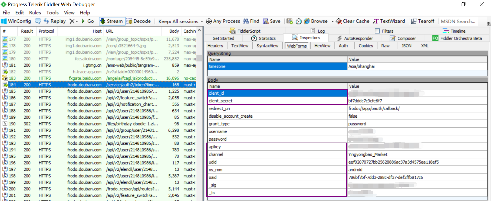
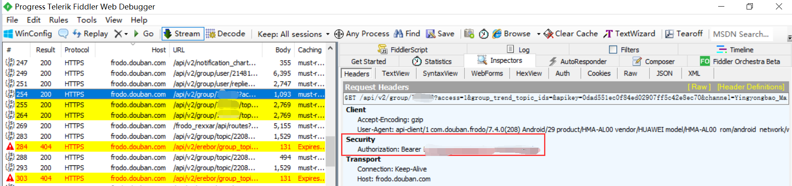

豆瓣自动回贴机器人【我没有用来干坏事呀~】
接到这个需求的起初，乱搜，尝试过：
用别人封装好的 apk（安装的时候说有不良信息，就没敢继续下去了）用别人写好的油猴脚本，但是脚本是没有验证码的，所以在豆瓣网页端一个 id 只能连续回复两次，第三次的时候就需要填写验证码了，舍弃
上 GitHub 找别人开源项目，有些是加入了验证码的，但是没有跑起来。
原是我不配，菜狗最终自己的参考：因为移动端发帖无需验证码，所以模拟移动端登录发贴过程，绕过填写验证码阶段
something to say
感恩开源大佬，此生永远为开源发电 🚀，GayHub 🐮🍺
豆瓣 gg，没有恶意，不用来干违法犯罪的事，只用来顶顶贴，我们小组会好好爱护豆瓣服务器，不要过于频繁地发送请求，如果违规触犯了什么，俺俺俺😐🤐，马上撤
待实现的功能：（最近在写毕设，来不及改代码，等过完答辩先~）
- 按照帖子 topic 定制回复语
- 回复 < x 条的消息
移动端抓包
环境
- Windows 64
- Android 10.0
- Fiddler 4
坑
下载 fiddler 并且抓包
- 下载地址，需要科学上网，选择 Fiddler Classic，填入相关信息，选择 Download for Windows
- 参考：使用 fiddler 实现手机抓包
- 注意『（2）为证书命名后点击确定』步骤：需要点击下载好的 cer 证书，然后安卓手机会提示使用以下方式打开，选择『证书安装器』即可，为证书命名随意
- 注意『（3）要求设置一个手机密码』步骤，在现在的安卓手机尝试指纹就可（依自己手机而随机应变）
Android 高于「7.0」 之后，移动端访问 HTTPS 的链接都无法连接成功，此时解决方法指路：fiddler 抓安卓 7.0 以上版本，直接看第四步『使用兼容 Xposed 的框架 + JustTrustMe』
- 注意被测应用选择豆瓣，就相当于在 VirtualXposed 软件中打开豆瓣，其中发送的数据流量包都会被 Fiddler 记录下来
抓两种包
打开 Fiddler，选择 File → Capture Traffic，如果是 ✔ 状态，则说明在抓包，再点一次就是停止抓包。
【登录包】在装包状态下，此时我们用 VirtualXposed 打开「豆瓣」，一定要用帐号密码登录，成功登录后，在 Fiddler 页面 ctrl + f 查找一个 URL 包含
/service/auth2/token的包，如下图所示。User-Agent 信息

点击 WebForms 也有一些重要信息，我发现这个包里的密码都是明文的呜呜（码上加码

注：其中只有 _sig 、_ts 字段会更新，而且要定期更换（意思就是定期重新操作一遍），不然 POST 请求会失效
【抓刷新小组首页时的包】同理，我们继续访问小组首页，刷新成功后，在 Fiddler 页面 ctrl + f 查找一个 URL 包含「小组 id」的包（给我们的小组打上小码码），需要里面的 Authorization

线上部署
部署环境
- Ubuntu 18.04 server（非必须，可以先在自己的电脑尝试，如果是要不间断运行，则需要一个一直工作的服务器啦）
- git
步骤
拉取 GitHub 的仓库
git clone https://github.com/polymorphism-0/douban-auto-reply.git进入工作目录
cd douban-auto-reply，输入vim config.py修改如下信息（都是抓包里的信息）：- group_id
- client_secret
- authorization
- headers 下的 “User-Agent”
device_info = "os_rom=android&apikey=0dad551ec0f84ed02907ff5c42e8ec70&channel=Yingyongbao_Market&udid=eef02070727bb25628886ac37a3d4575ea118ef5&oaid=786bf7bf-7dd3-288c-df37-def2ffb817c6&timezone=Asia%2FShanghai"原文没有 oaid 和 timezone ，需要加上，否则可能会出现请求不完整，导致返回 400 错误。- group_topics_url 中的 _sig、_ts
【启动 IP 代理池】改完后先跑
python3 IPProxyPool/IPProxy.py（需要一直在后台运行）【运行主程序】再跑
python3 autoreply.py结果
[2021-04-13 21:15:32] [INFO] Sleep for 4 seconds
[2021-04-13 21:15:36] [INFO] New proxy, {'http': 'http://27.9.97.90:8118'}
[2021-04-13 21:15:36] [INFO] 第1次刷新小组首页
[2021-04-13 21:15:37] [INFO] comment: ค(TㅅT)ค, https://frodo.douban.com/api/v2/group/topic/22067****/create_comment, status_code: 200
[2021-04-13 21:15:37] [INFO] 第1次回复
[2021-04-13 21:15:37] [INFO] Sleep for 18 seconds
[2021-04-13 21:15:55] [INFO] 第2次刷新小组首页
[2021-04-13 21:15:56] [INFO] comment: ｡･+ﾟﾟ(うд´｡)ﾟﾟ+･｡, https://frodo.douban.com/api/v2/group/topic/22071****/create_comment, status_code: 200
[2021-04-13 21:15:56] [INFO] 第2次回复
[2021-04-13 21:15:56] [INFO] Sleep for 25 seconds